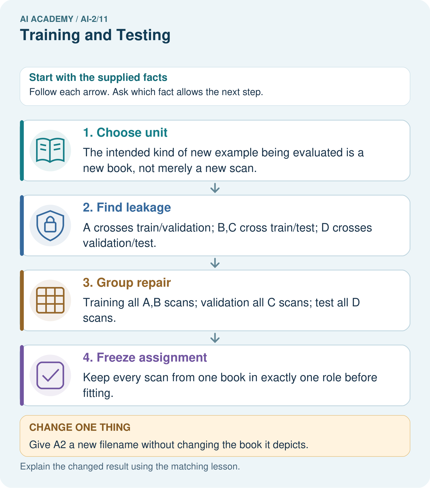

AI Academy · Level 2 · Grade 7 · Week 11 · Workbook
Training and Testing
Learn to understand, design, build, test and explain AI systems responsibly.
Project: Transparent Book Recommender
Workbook · 1 of 19
Recall and choose your starting point
Try the recall before opening notes. Then use a different colour or a labelled second line to correct your explanation.
Human Classifier Simulation
Without opening the old lesson, explain one key idea from Human Classifier Simulation. Give an example and a mistake that the idea helps you avoid.
Operational Labels
Without opening the old lesson, explain one key idea from Operational Labels. Give an example and a mistake that the idea helps you avoid.
Loops and Stopping
Without opening the old lesson, explain one key idea from Loops and Stopping. Give an example and a mistake that the idea helps you avoid.
Workbook · 2 of 19
Practise with fading help
Use W2: Distinguish frames from groups for Splits and related examples. Record the answer once; the lesson and workbook refer to the same attempt.
| Given inputs | Procedure I chose | Middle steps | Result and check |
|---|---|---|---|
Workbook · 3 of 19
Individual reasoning check
Use the worked case for Splits and related examples. Proposed explanation: “Different row IDs mean independent examples”. Decide whether this explanation is supported. Point to the step or supplied fact that decides; explain your repair if needed.
Workbook · 4 of 19
Independent transfer case
Independent case: Audit and repair independently
Eight frames come from trips P (P1 P2 P3), Q (Q1 Q2), R (R1), S (S1 S2). A proposed split is training P1 Q1 R1; validation P2 S1; test Q2 P3 S2. Identify shared groups for each pair of sets. Repair it by assigning P and Q to training, R to validation and S to test. List all frames in each role and give row and group counts. State one limit of the repaired plan.
Attempt this case before feedback. Record any help. Earlier examples below are further practice; a case already practised with feedback cannot establish fresh transfer.
Workbook · 5 of 19
Your learning target
A team tests five rule versions on the same ten books and chooses the highest score. It calls the final score an unbiased unseen test result. Explain the issue and revise the evaluation plan.
Workbook · 6 of 19
Solve the given case
A rule is developed and evaluated using the same books A–H.
Why does this not establish unseen performance?
Show your trace, calculation or evidence
Workbook · 7 of 19
Check a changed case
You tune a rule using cards 1 to 8 and test it on cards 9 and 10. After seeing card 9's error you change the rule. Is card 9 still untouched test evidence?
My independent answer and reason
Week 11 Test and reflect
Workbook · 8 of 19
Design a revealing test
Create a changed input, boundary case or missing-information case. Write the expected answer or safe response before testing.
| Test record | My evidence |
|---|---|
| Changed input or condition | |
| Expected answer or fallback | |
| Observed result | |
| Why the result occurred |
Workbook · 9 of 19
Project checkpoint
Keep final user profiles hidden until weights and thresholds are fixed.
The project change and evidence I will keep
Workbook · 10 of 19
Self check
I can explain the mechanism. I can show evidence. I can handle a changed case. I can name a limit. Mark each as not yet, with help or independently, and attach supporting work.
Teacher review ____________________ Next step ____________________
Workbook · 11 of 19
Transfer practice from the original programme
A team tests five rule versions on the same ten books and chooses the highest score. It calls the final score an unbiased unseen test result. Explain the issue and revise the evaluation plan.
Record support used: none, hint or teacher explanation.
Workbook · 12 of 19
W1 Explain the three roles
Explain what training, validation and test sets are used for. What changes if you repeatedly choose a model using its test score?
Workbook · 13 of 19
W2 Distinguish frames from groups
For the worked A through F plan, give training, validation and test counts first in groups and then in rows. Interpret [] from the code and state one problem it cannot detect.
Workbook · 14 of 19
W3 Repair a related example leak
A1 and A2 are in training and A3 is in test. Explain why unique frame IDs and a fixed random seed do not fix this. Propose a repair and what to record.
Workbook · 15 of 19
W4 Audit and repair independently
Eight frames come from trips P (P1 P2 P3), Q (Q1 Q2), R (R1), S (S1 S2). A proposed split is training P1 Q1 R1; validation P2 S1; test Q2 P3 S2. Identify shared groups for each pair of sets. Repair it by assigning P and Q to training, R to validation and S to test. List all frames in each role and give row and group counts. State one limit of the repaired plan.
Workbook · 16 of 19
W5 Match separation to the claim
A model will be evaluated on new routes. Route North has trips A and B; route South has C and D. A proposed split trains on A and C and tests on B and D. Explain the problem and give a route-based alternative. Is this enough for a strong performance claim?
Workbook · 17 of 19
Feedback, return check and learning record
| Evidence | My record |
|---|---|
| Worked alone / hint / model | |
| First step I repaired and why | |
| New case checked later; date and result | |
| What I can now explain without notes | |
| One remaining question |
Revisit this idea with your teacher after a delay. Familiarity is different from explaining and using it on a changed case.
Workbook · 18 of 19
Pictorial case practice: Training and Testing
A fictional catalogue model learns from scans of book covers and will face previously unseen books.
Book A has scans A1,A2; B has B1,B2; C has C1,C2; D has D1,D2.
Proposed training A1,B1,C1; validation A2,D1; test B2,C2,D2.

How many distinct books are in each repaired role, and why report that as well as scan counts?
Support used: alone / hint / worked example. This record is practice evidence.
Project connection: Group the recommender’s related reviews, editions or repeated-user examples according to its intended evaluation claim.
Workbook · 19 of 19
Project portfolio milestone
Project: Transparent Book Recommender
Current milestone: Make a transparent first version. Keep a trace of how one input becomes an output; explain the rule or learned component.
Group the recommender’s related reviews, editions or repeated-user examples according to its intended evaluation claim.
| Evidence to keep | My record |
|---|---|
| This week’s input and deciding step | |
| Prediction and actual result (or labelled paper trace) | |
| One change since the previous checkpoint and why | |
| One error or limit and the next test |